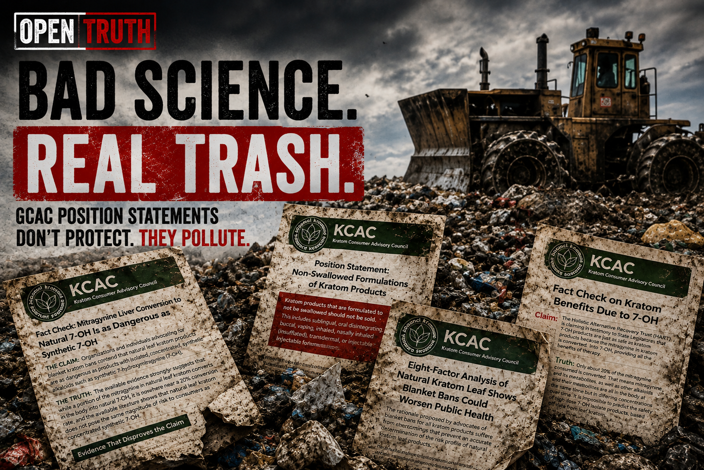
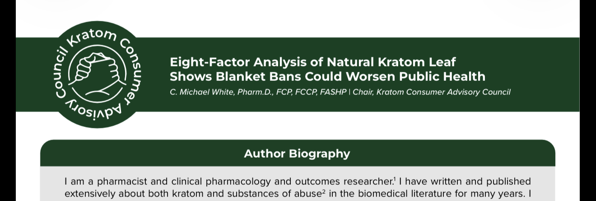
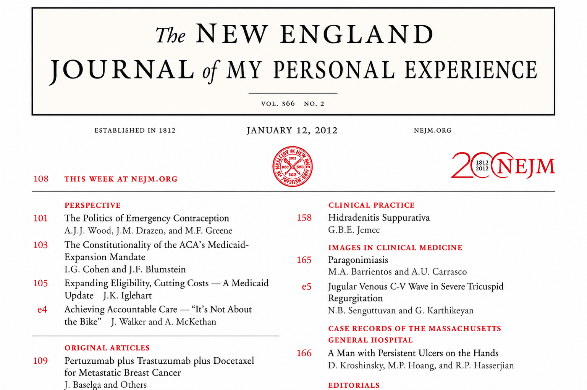

Seven position papers. Endless green headers. Plenty of footnotes. Same basic message: trust the kratom industry, ignore the warning signs, and let government babysit the market.
GCAC wants lawmakers to think these papers are sober, careful, science-driven guidance.
They are not.
They are advocacy documents built to do one thing: keep kratom on the market by making every problem sound manageable, every warning sound temporary, and every risk sound like someone else's fault.
Read them closely and the pattern is impossible to miss:
You do not need to be a pharmacist to know when an argument is doing backflips.

This is the flagship piece — the big, serious-looking document meant to impress lawmakers.
And it gives the game away immediately.
The conclusion is baked into the title: blanket bans are bad, kratom should stay on the market.
So before the first real argument even starts, the destination is already chosen.
The document leans heavily on comparisons that make kratom look respectable by comparison — heroin, fentanyl, illicit opioids, harder drugs. That is a clever trick, but it dodges the real question.
Lawmakers are not being asked whether kratom is better than heroin.
They are being asked whether kratom is safe enough to be sold in gas stations, smoke shops, and convenience stores as a consumer product.
Those are not the same question.
The paper also leans on user testimonials, self-reports, and favorable impressions as if those things settle the issue. They do not. People liking a drug is not proof that it is safe.

That is the GCAC formula: dress up opinion as expertise, dress up advocacy as analysis, and dress up reassurance as science.
These papers love to lecture everyone about evidence quality. They talk about hierarchy of evidence, the limits of animal studies, the need for caution, the importance of better data.
Wonderful.
Then, whenever it helps the case for kratom, those same limits magically loosen.
Now observational claims matter. Now user experience matters. Now weak evidence is suddenly "reasonable." Now reassurance is served with a white coat and a bibliography.
This paper starts by saying something sensible: strong human evidence matters more than weaker animal or lab evidence.
True.
Then it admits that neither kratom nor 7-OH has the kind of human clinical evidence needed to prove medical benefit or fully define the risks.
Also true.
And then it goes right ahead and reassures lawmakers anyway.
That is the hustle.
When there is not enough evidence to prove something negative about kratom, GCAC says slow down.
When there is not enough evidence but it helps protect kratom's image, GCAC suddenly becomes very comfortable drawing favorable conclusions.
The paper also admits an important fact it cannot talk its way around: mitragynine turns into 7-OH in the body.
That alone undercuts the fairy tale that leaf kratom is somehow cleanly separate from stronger opioid-like downstream effects.
This paper says products that bypass the liver — like inhaled, sublingual, transdermal, nasal, or injectable forms — should not be sold.
That is a major admission.
Why? Because GCAC is openly acknowledging that the route of use can raise drug exposure and raise risk.
Exactly.
But then it tries to calm lawmakers down by treating swallowed products like the acceptable category.
That does not follow.
"Less dangerous than vaping it" is not the same thing as safe.
This paper is one long accidental confession.
GCAC says children exposed to kratom can have:
It also warns about lead exposure, candy-like products, bright packaging, mascots, gummies, sweets, and easy access.
Then GCAC recommends:
This may be the most revealing paper in the pile.
GCAC admits products are sold:
That is a brutal description of the market.
Then GCAC tries to fix all of that with better labeling.
But the paper sneaks in a huge assumption: that someone can put a "recommended" amount and a "safe" number of daily servings on the label.
Based on what?
A label cannot invent a proven safe dose where the science has not established one.
This one is almost funny in how badly it undermines its own case.
GCAC says registration will help protect the public.
Then it points to a Utah audit showing that: